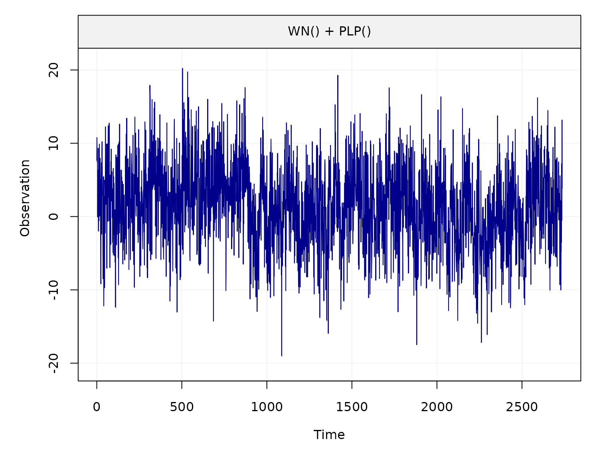
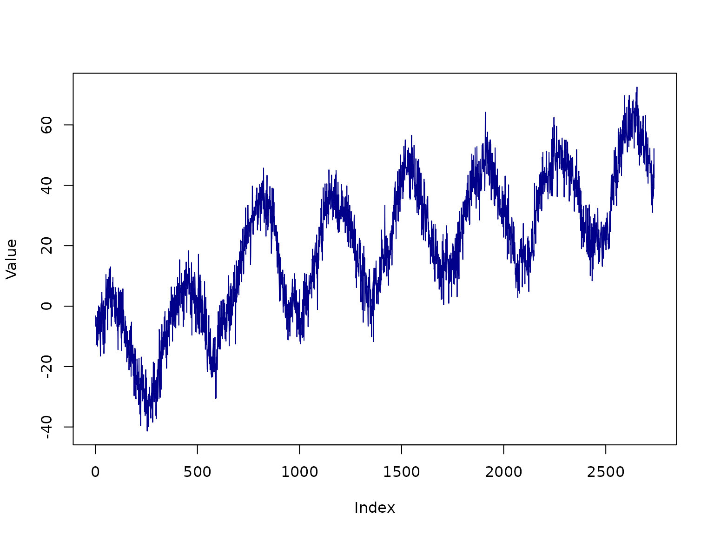

generate_data.Rmd
library(gmwmx)
#> Loading required package: stringi
#> Loading required package: infuser
#> Loading required package: wv
#> Loading required package: Matrix
#> Loading required package: simts
#>
#> Attaching package: 'simts'
#> The following object is masked from 'package:wv':
#>
#> unitConversion
#> Loading required package: longmemo
#> Loading required package: ltsa
#> Loading required package: pbapply
#> Loading required package: pbmcapply
#> Loading required package: parallel
#> Loading required package: rjson
#> Loading required package: robustbase
#> Registered S3 method overwritten by 'robustbase':
#> method from
#> print.lts simts
#> Loading required package: MASS
#>
#> Attaching package: 'MASS'
#> The following object is masked from 'package:simts':
#>
#> select
#> Loading required package: fs
phase <- 0.45
amplitude <- 2.5
sigma2_wn <- 15
sigma2_powerlaw <- 10
d <- 0.4
bias <- 0
trend <- 5 / 365.25
cosU <- amplitude * cos(phase)
sinU <- amplitude * sin(phase)
# define time at which there are jumps
jump_vec = c(600, 1200, 2000)
jump_height = c(10, 15, 20)
theta_vec <- c(bias, trend, cosU, sinU, jump_height, sigma2_wn, sigma2_powerlaw, d)
nparam <- length(theta_vec)
# define beta
beta <- c(bias, trend, jump_height, cosU, sinU)Using functions implemented in simts, we generate realizations from the sum of a white noise and power law process.
model_i <- WN(sigma2 = sigma2_wn) + PLP(sigma2 = sigma2_powerlaw, d = d)
model_i
#>
#> Guess Starting Values: FALSE
#> Terms Initial.Values
#> WN 15.0
#> SIGMA2 10.0
#> d 0.4
#> The model will be initiated using the initial values you supplied.Let us consider a period of 7.5 years with daily observations:
n <- 7.5 * 365We fix a seed for reproducibility and create the X matrix encoding the shift in means of the time series and the sinusoidal signals.
seed_i <- 12345
set.seed(seed_i)We then generate residuals from the stochastic model
eps <- simts::gen_gts(model = model_i, n = n)We can plot the residuals with
plot(eps)
We then artificially add some perturbations and data features data by adding location shifts, a deterministic vector (trend) and sinusoidal signals in the time series.
This is operation is performed with gmwmx::create_A_matrix().
X <- gmwmx::create_A_matrix(1:length(eps), jump_vec, n_seasonal = 1)We then create the estimated time series given the model definition in …
yy <- X%*% beta + epsWe can then plot the generated time series
